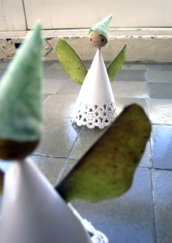

Facebook
Pinterest
Instagram
⌕ Search
ES
EN
DE
☰ Menu
Home
The House
Accessories
Decorate
Instruccions
Illustration
Custom water bottles
Notebook crafts and activities 01
App NOT ONLINE RIGHT NOW
Blog
Holidays
Christmas
Easter
Halloween
Carnival & costumes
Valentine’s Day
Birthday
Mother’s/Father’s Day
Back to school
Seasons
Spring
Summer
Autumn
Winter
What to do
Toys
Games
Printables
Food & recipes
Decoration
Painting
Experiments
Outdoors
Learning
Animals
Gifts & jewellery
Building & tricks
Other crafts
Material
Paper
Cardboard
Paper rolls
Recycling
Stones
Leaves & nature
Fabric & sewing
Home
›
Blog
›
Occasion
›
Elf
Occasion
·
Autumn
Elf
November 17, 2011

Autumn elf
← Worm
Game →
You may also like
Occasion
Calendar
Occasion
Festoon
Occasion
Angels
Occasion
Zoom
Activity
Stamping
Occasion
Christmas tree